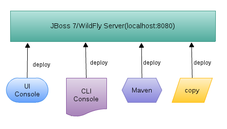
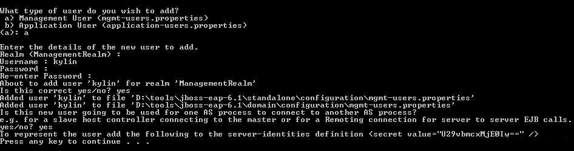

Maven 远程部署项目到jboss-as-7¶
2015/08/14 22:07
最近在看许晓斌（Juven Xu）编写的《Maven实战》，书中提到Maven远程部署项目到服务器。刚好最近做的项目在测试阶段，不过测试环境用的服务器是Jboss（jboss-as-7.1.0.Final），遂开始折腾。以jboss-as-7.1.1.Final为例。
一、启动Jboss¶
安装Jboss在Linux下解压即可。启动包括standalone模式和domain模式。
-
standalone模式
-
简单开启服务器的命令：进入到 bin 目录下，执行命令。
这种开启服务器的方式有个缺点，当你的命令窗口关闭后，服务自动down了。
- 让服务器开启后在后台运行：进入到bin目录下，执行命令。
这样服务器就会在后台运行，即使关闭命令窗口，服务器依然运行。服务需关闭时，采用ps -ef | grep jboss，查看进程号，然后kill -9 进程号，再重启。
执行nohup命令，控制台logout后，进程仍然继续运行，起到守护进程的作用（虽然它不是严格意义上的守护进程）。原程序的的标准输出被自动改向到当前目录下的nohup.out文件，起到了log的作用，实现了完整的守护进程功能。 附：简单而有用的nohup命令
- domain模式
该模式暂不叙述。
二、配置Jboss¶
默认Jboss只绑定在本地127.0.0.1外网无法访问。需配置standalone的配置文件。
第一步，打开${JBOSS_HOME}/standalone/configuration/standalone.xml
第二步，查找到如下配置
<interfaces>
<interface name="management">
<inet-address value="${jboss.bind.address.management:127.0.0.1}"/>
</interface>
<interface name="public">
<inet-address value="${jboss.bind.address:127.0.0.1}"/>
</interface>
</interfaces>
将127.0.0.1改成0.0.0.0，这样外网就能访问Jboss，同时可以进入管理模式。
第三步，设置URI编码，将以下内容插入到standalone.xml文件中<extensions></extensions>节点之后。
<system-properties>
<property name="org.apache.catalina.connector.URI_ENCODING" value="UTF-8"/>
<property name="org.apache.catalina.connector.USE_BODY_ENCODING_FOR_QUERY_STRING" value="true"/>
</system-properties>
三、部署Jboss¶
如下图中描述了部署应用的四种方式：

- Administration UI Console
- Command Line Console
- Maven Plugin
- copy
在此之前我们建立一个初始化管理账户，进入${JBOSS_HOME}/bin下，执行

如上，在提示输入username和password时输入相应的用户名和密码，我们随后会使用它登录管理控制台。
- Administration UI Console部署
访问http://127.0.0.1:9990/console（本地）或http://serverIP:9990/console（外网）进入管理界面，该模式是图形化界面，不再赘述。
- Command Line Console部署
执行./jboss-cli.sh进入到Command Line Console界面
[twen@localhost bin]$ ./jboss-cli.sh
You are disconnected at the moment. Type 'connect' to connect to the server or 'help' for the list of supported commands.
[disconnected /] connect
[standalone@localhost:9999 /]
- Maven Plugin
利用插件前先执行mvn clean package打包，确保在target目录下有war存在。
- jboss-as-maven-plugin
配置Maven
<plugin>
<groupId>org.jboss.as.plugins</groupId>
<artifactId>jboss-as-maven-plugin</artifactId>
<version>7.1.1.Final</version>
<configuration>
<hostname>serverIP</hostname>
<port>9999</port>
<username>user</username>
<password>pass</password>
</configuration>
</plugin>
- cargo-maven2-plugin
*荐
Maven配置
<plugin>
<groupId>org.codehaus.cargo</groupId>
<artifactId>cargo-maven2-plugin</artifactId>
<version>1.4.14</version>
<configuration>
<!-- Container configuration -->
<container>
<timeout>60000</timeout> <!-- 1 minutes -->
<containerId>jboss71x</containerId>
<type>remote</type>
</container>
<!-- Configuration to use with the container -->
<configuration>
<type>runtime</type>
<properties>
<cargo.hostname>serverIP</cargo.hostname>
<cargo.jboss.management-native.port>9999</cargo.jboss.management-native.port>
<cargo.remote.username>user</cargo.remote.username>
<cargo.remote.password>pass</cargo.remote.password>
</properties>
</configuration>
<!-- Deployer configuration -->
<deployer>
<type>remote</type>
</deployer>
</configuration>
<dependencies>
<dependency>
<groupId>org.jboss.as</groupId>
<artifactId>jboss-as-controller-client</artifactId>
<version>7.1.0.Final</version>
</dependency>
</dependencies>
</plugin>
这样利用Maven Plugin就可以执行mvn jboss-as:deploy（mvn cargo:deploy）等命令了。
- copy
拷贝war包到${JBOSS_HOME}/standalone/deployments目录，在该目录下会创建war包名.dodeploy文件，说明正执行部署，完成后会生成war包名.deployed文件,说明部署成功。
四、遇到的坑¶
-
没在配置文件中修改端口的时候执行
解决方法见mvn jboss-as:deploy，报错log如下：二、配置Jboss第二步。${jboss.bind.address.management:127.0.0.1}将127.0.0.1改成0.0.0.0 -
远程部署后，当Jboss启动时，应用报错，但Jboss仍然启动了。这时候将
XXX.war的文件删除，在此启动Jboss报错如下：解决方法，修改[Host Controller] 09:03:13,042 ERROR [org.jboss.as.controller.management-operation] (Controller Boot Thread) JBAS014613: Operation ("deploy") failed - address: ([("deployment" => "XXX.war")]) - failure description: "JBAS010876: No deployment content with hash 5f870cae18c7f6f29b8964e18895199c3754de09 is available in the deployment content repository for deployment 'ez-message.war'. This is a fatal boot error. To correct the problem, either restart with the --admin-only switch set and use the CLI to install the missing content or remove it from the configuration, or remove the deployment from the xml configuraiton file and restart."${JBOSS_HOME}/standalone/configuration/standalone.xml配置文件，把<deployments/>内容删除。注：远程部署时将war包上传至${JBOSS_HOME}/standalone/data/content目录下。